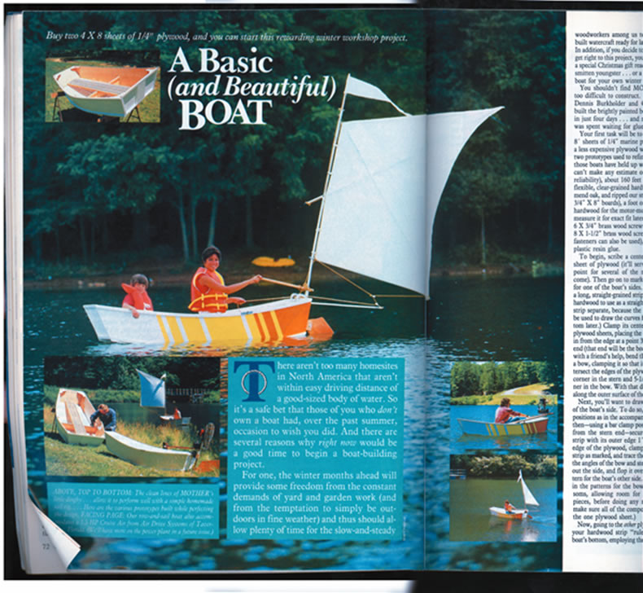
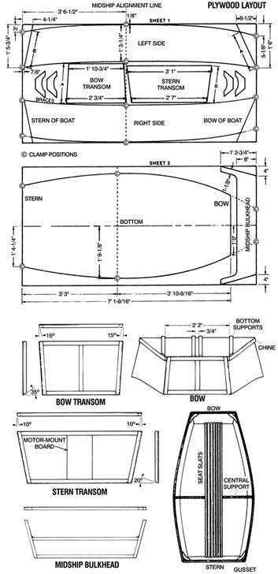
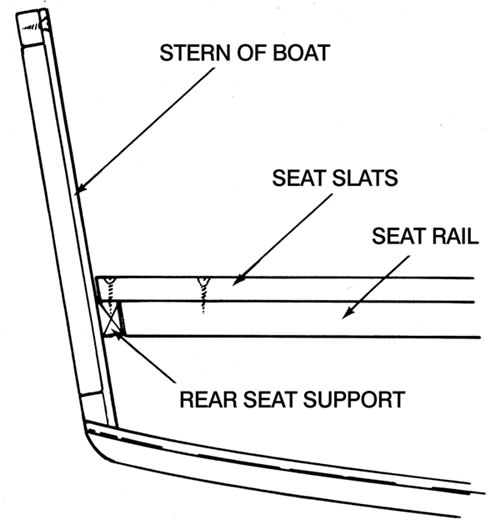
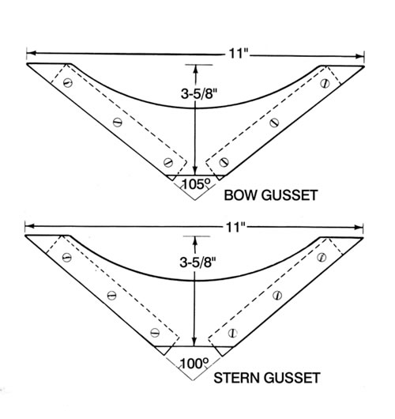

As Water Rat noted in The Wind in the Willows, “There is nothing-absolutely nothing-half so much worth doing as simply ?messing about in boats.” Mother’s Basic Boat is a simple boat plan, which should be easy to construct for those with woodworking experience. To purchase more detailed plans, with instructions for constructing an optional sail.
Cut out The Pieces.
All you’ll need to build the boat are a few tools and the materials listed at right. The large pieces of the boat will be cut from plywood, and reinforced with pieces of hardwood lumber. You can cut the 170 feet of lumber you will need from three 10-foot lengths of 1-by-8 stock, or use any scrap hardwood lumber cut to 11/8-inch-wide boards. (For a sketch of the completed boat.
Start by drawing an alignment line for the midship bulkhead, which forms the central support for the boat, across the sheet of plywood 3 feet 61/2 inches from the stern end, as shown in Figure A. Now select one of your long pieces of lumber, which you will use to draw the ship’s curve. Start by drawing the left side piece. Mark the midway point of the length of the strip on the piece and center the strip on edge over the midship alignment line. Next, use a C-clamp to secure the strip over the outside center clamp position located one-eighth inch in from the plywood’s edge. (Clamp positions are marked on the diagram with a “C”.)
With a friend’s help, gradually bend the ends of the strip in until its outside surface can be clamped at the two other outer clamping positions. Now trace along the outer surface of the ship’s curve to form an arc that intersects all three points. Move the piece of lumber to the inner set of clamp positions, again aligning its center point to the midship line. Bow the strip around to intersect the three points and secure it with clamps. Again, draw the arc along the ship’s curve, then add the slant of the bow and stern as shown in Figure A. Use a saber saw to carefully cut around the boat’s sidewall. Use the flopped first piece as a pattern to cut out the right sidewall.
Going on to the second plywood sheet, use your hardwood strip “ruler” to draw the boat’s bottom, employing the same bend-and-trace technique used when drawing the sides. Then, cut out the bottom, leaving a surplus of 11/2 to 2 inches around the pattern on the sides and at the bow. It will be trimmed away later. With that done, you can cut out the second side and the transoms, and also draw and cut out the midship bulkhead.
Assembling the Boat
Next, you’ll put together the support frames for the bow transom (front of the boat), stern transom (back of the boat) and midship bulkhead (center support) and attach them to the boat sides. Start by gluing and screwing the hardwood support strips, and the cut-to-fit motor-mount brace, to the front and rear transoms and the central support, using the No. 6 wood screws set at 3-inch intervals. The upper support strips for the front and rear transoms will be trimmed to match the angles of the bow and stern (see Figures C and D). Simply use a sliding bevel to measure the appropriate angle on the bottom panel-use the pattern lines, not the “hem”-then set your saw’s miter gauge to that angle and trim away.
Use glue and 3-inch-spaced No. 6 wood screws to secure the two sides to the midship bulkhead, which should be positioned 3 feet 61/2 inches from the boat’s stern. Then, swing in the sides and, starting with the stern transom, glue and screw the side panels to the stern transom support frame-again setting the screws at 3-inch intervals. You might want to loop a rope around the two sides at a point near the front to keep them from spreading too much while you do this. Now, secure the sides to the bow transom in the same manner and let the glue dry for the full recommended time period.
After the glue has dried, you’ll need at least 20 clamps to secure hardwood support strips to the bottom edges of the two sides. Start by finding the two 10-foot chines, which you will attach to the bottom of the boat (see Figure F). Clamp one along the bottom edge of each sidewall. Start at the rear, allowing the chine to extend past the stern transom a few inches, then gradually work your way to the bow, applying clamps every 10 inches or so. Once the chines are clamped in place, anchor them from the outside at 3-inch intervals with the No. 6 wood screws. To add a little extra holding power, screw in a No. 8 fastener from the outside at each of the six butt joints between the sidewalls, transoms and bulkhead. After the glue has set, trim the excess length from the chines.
Now it’s time to attach the bottom of the boat. Apply a continuous coating of glue around the frame, then position the bottom, finished side up, over the hull so that the midship alignment marks line up. Secure the bottom plate to the chines, transoms and bulkhead from the outside with No. 6 fasteners at 3-inch intervals.
Use glue and 3-inch-spaced No. 6 wood screws to secure the two sides to the midship bulkhead, which should be positioned 3 feet 61/2 inches from the boat’s stern. Then, swing in the sides and, starting with the stern transom, glue and screw the side panels to the stern transom support frame-again setting the screws at 3-inch intervals. You might want to loop a rope around the two sides at a point near the front to keep them from spreading too much while you do this. Now, secure the sides to the bow transom in the same manner and let the glue dry for the full recommended time period.
After the glue has dried, you’ll need at least 20 clamps to secure hardwood support strips to the bottom edges of the two sides. Start by finding the two 10-foot chines, which you will attach to the bottom of the boat (see Figure F). Clamp one along the bottom edge of each sidewall. Start at the rear, allowing the chine to extend past the stern transom a few inches, then gradually work your way to the bow, applying clamps every 10 inches or so. Once the chines are clamped in place, anchor them from the outside at 3-inch intervals with the No. 6 wood screws. To add a little extra holding power, screw in a No. 8 fastener from the outside at each of the six butt joints between the sidewalls, transoms and bulkhead. After the glue has set, trim the excess length from the chines.
Now it’s time to attach the bottom of the boat. Apply a continuous coating of glue around the frame, then position the bottom, finished side up, over the hull so that the midship alignment marks line up. Secure the bottom plate to the chines, transoms and bulkhead from the outside with No. 6 fasteners at 3-inch intervals.
With the bottom in place, carefully trim the excess plywood from the edges, then glue and clamp the four bottom support strips along the length of the hull, as shown in Figure F. Then flip the skiff over, and from the inside, fasten the strips with No. 6 wood screws set 3 inches on center. Next, attach the gunwales (top support strips) to the top of each side of the boat, just as you attached the chines to the bottom of each side.
|
 Putting the finishing touches on the boat includes adding seats. |
 Installing corner braces, or gussets (right) |
 |
|
 |
|
|